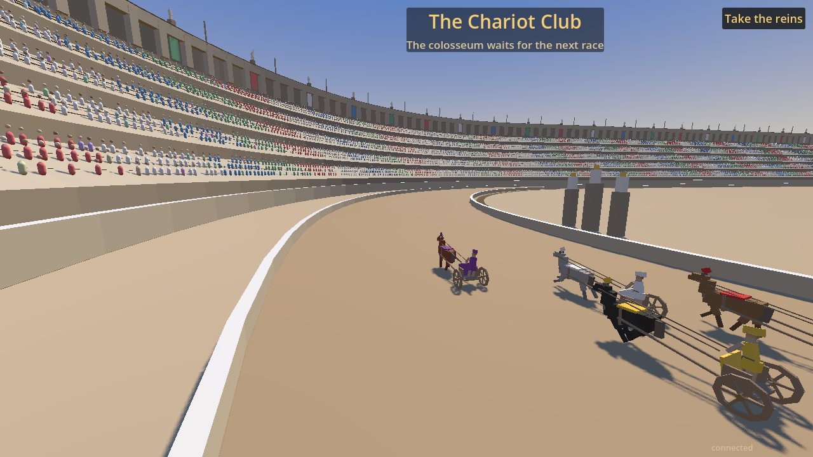

Godot 4.7.1 WebGPU MIT / open source
The Chariot Club — a Roman colosseum rendered by Godot 4.7.1 through the Studio Foundation WebGPU backend: official Godot plus a transparent, checksum-locked patch series. No plugin, no download.

WebGPU support: checking…
Enter the colosseum Source Minimal sceneGPUValidationError.Honest status: WebGPU support is beta. Some post-processing effects are still disabled under WebGPU, and WebGL 2 remains the supported fallback for production.
The engine, the patch series, and the minimal scene are checksum-locked and rebuildable from the repository. The Chariot Club's game content is not published — it is a studio game, so the colosseum above cannot be rebuilt from source today. The scene at /showcase/ is the one you can reproduce end to end, and it exercises the same render path.
git clone https://github.com/lxsolutions/studio-foundation.git
cd studio-foundation
just engine-fetch # official Godot + verified patch series
just engine-build # build the WebGPU export templates
just export-browser-webgpuSkipping the multi-hour engine build: prebuilt export templates are published with their SHA-256 hashes.
Godot does not accept AI-generated contributions and has said it does not intend to add AI features to the engine. That leaves an open lane, and Studio Foundation takes it: an AI-native, open-source game-dev toolkit — MCP server, agent workflows, and an AI-assisted engine backend — built in the open and reproducible by construction, so "AI-built" never means "unauditable."
Official Godot stays the upstream. We own the distribution, not the engine.